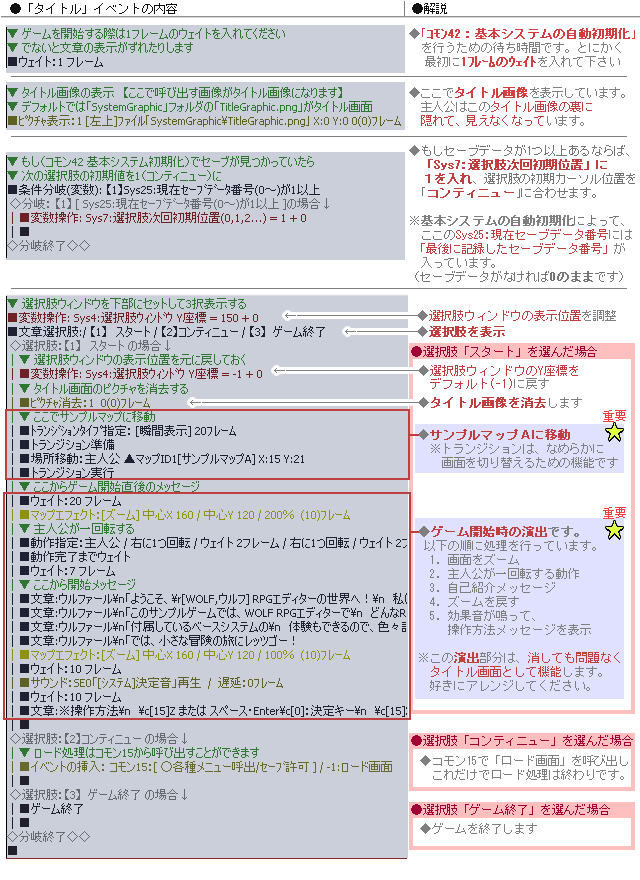

Understanding the "Title" map
In the sample data, the "0: Title" map contains exactly one event called "Title Event". This page explains what that event does.
(Content is based on Ver1.16; event commands may differ in newer versions.)
What does the "Title Event" do?
In broad strokes, it performs the following steps:
1. The moment the game starts, it displays the title image.
2. It presents the player with the choices: "Start", "Continue", and "End Game".
3.1. Choosing "Start" triggers a map transfer and Wolfar gives the game introduction.
3.2. Choosing "Continue" displays the Load screen.
Let's look at the actual event to see the specific settings and processes that make this work.
Open the event
Click "0: Title" in the Map Selector  window to open the Title map.
window to open the Title map.
Right-click the single event in the center and select "Create/Edit Event".
View the event window
The window on the right will appear.
Focus on the "Trigger Condition" and the Event Command list on the right.
Trigger Condition: "Auto-execute"
Notice that the Trigger Condition is set to "Auto-execute".
This means the event will run automatically whenever the player is anywhere on the same map.
In other words, as long as the game start position is set somewhere on the "0: Title" map, the title screen sequence will run no matter where on that map the player starts.
Detailed process contents
Here is the "Title" event's command list with annotations. There is a lot here, but for now just glance over the section handling the "Start" choice.

What are the key points?
This "Title" event can be reused in your own game with a few small changes, keeping these points in mind:
1. Change the "Transfer to Sample Map A" step (see Step 5) when "Start" is selected, to point to the starting location in your own game.
2. Also modify or delete the "Game Opening Sequence" section (see Step 5) to match your game.
If you're unsure, just press Del to delete the messages that say "Message: Wolfar\n..."!
※[Warning!] If you accidentally delete the "Location Transfer" command above the "Game Opening Sequence", you will be trapped on the title screen! This is a common mistake, so please be careful.
※ This is a faithful translation of the original guide, with minor editorial additions (terminology notes, extra examples, beginner-friendly clarifications) and updated screenshots, while preserving the original intent and instructions.